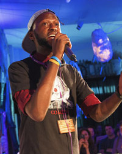
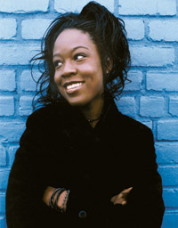

|
DEPORT THIS!
December 22 @ 8PM
A Hip Hop, Rock, and Soul Concert Benefit for #Not1MoreDeportation
Featuring Cassandra Kubinski & Devon Glover “The Sonnet Man”
Special Guest: Markeisha Ensley
and featuring the world premiere screening of "LOVE TRAIN".
A concert featuring live music with multi-media presentation and some of NYC’s most amazing local singers, musicians, and artists, collaborating across different genre, lending their support to the struggles of immigrants and their families, across the USA. This concert event will also feature the world premiere of the new music video "LOVE TRAIN" directed by Don Lieber and featuring Markeisha Ensley and Moeisha McGill.
"As artists, we believe in love, not walls. Please join us to share this timely musical event as we kick in the holidays with meaning - and with GROOVE."
Featured Artists:
Cassandra Kubinski
Pop singer/songwriter and actress, Cassandra Kubinski started her career playing "Annie" at the show's birth place, Goodspeed Opera House, and since then has gone on to collaborate with Billy Joel and Chris Botti; open for Anna Nalick, Dickie Betts, Ingram Hill, and more; perform internationally behind 4 album releases; and voice commercials for Maybelline, Barnes and Noble, Kohls, Homegoods, Dunkin Donuts, TD Ameritrade, and many more. Her latest release, "Onward" is available on iTunes, GooglePlay, Amazon, and at www.pledgemusic.com/projects/cassandrakubinski. Get to know Cassandra www.CassandraKubinski.com
Devon Glover "The Sonnet Man"
Devon Glover is a teacher, poet, rapper, from Brooklyn New York. He performs Shakespeare's Sonnets in a dynamic way through Hip-Hop in schools, universities and theaters to young audiences nationally and abroad. As The Sonnet Man, Devon has appeared on The Today Show, BBC, Shakespeare Festivals in Stratford Ontario and Stratford-upon-Avon. The release of his debut video “Hip-Hop Hamlet” was selected for the Shakespeare Short Film Festival in Stratford-upon-Avon. In April 2016, Devon went on a SonnetMarathon tour through the US, UK, and Morocco—where he rapped all 154 of Shakespeare’s sonnets in succession on April 24th. For more information, visit www.SonnetMan.com.
Special Guest: Markeisha Ensley
A cross between Nina Simone and Stevie Wonder, International recording artist Markeisha Ensley combines piano-playing flair with smooth soul, her sultry voice melting over soaring melodies. Originally from Aurora, Colorado, she was awarded the 2011 Abe Olman Scholarship Award for Excellence in Songwriting from the Songwriters Hall of Fame/Songwriters Guild of America, with previous recipients including John Legend. Now based in New York City, she has performed all over the world, most recently in Japan, Paris and the Philippines. Combining her influences of gospel, jazz and old school soul music, Markeisha strikes an uplifting groove and graces the stage with a powerful presence. Her most recent EP is entitled Talk to Me. www.Markeisha.com
|